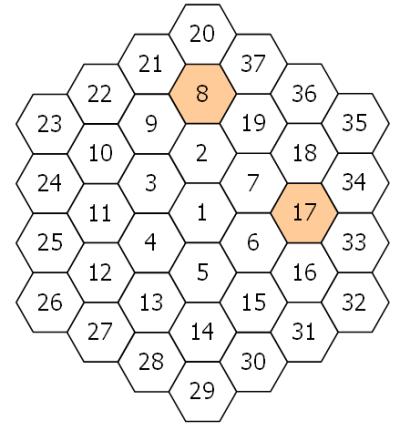

Project Euler 128
题目
Hexagonal tile differences
A hexagonal tile with number \(1\) is surrounded by a ring of six hexagonal tiles, starting at "\(12\) o'clock" and numbering the tiles \(2\) to \(7\) in an anti-clockwise direction.
New rings are added in the same fashion, with the next rings being numbered \(8\) to \(19\), \(20\) to \(37\), \(38\) to \(61\), and so on. The diagram below shows the first three rings.

By finding the difference between tile \(n\) and each of its six neighbours we shall define \(PD(n)\) to be the number of those differences which are prime.
For example, working clockwise around tile \(8\) the differences are \(12, 29, 11, 6, 1\), and \(13\). So \(PD(8) = 3\).
In the same way, the differences around tile \(17\) are \(1, 17, 16, 1, 11\), and \(10\), hence \(PD(17) = 2\).
It can be shown that the maximum value of \(PD(n)\) is \(3\).
If all of the tiles for which \(PD(n) = 3\) are listed in ascending order to form a sequence, the \(10\mathrm{th}\) tile would be \(271\).
Find the \(2000\mathrm{th}\) tile in this sequence.
解决方案
首先需要通过一些证明，跳过完全不需要检查的数。
我们在这里先将每个六边形圈里面的数分成以下几类：
- 圈的起点（\(12\)点方向），如\(2,8,20\)等
- 圈的终点，如\(7,9,37\)等
- 圈的边节点（不包括终点），如\(9,11,13,15,17,33,34\)等
- 圈的\(4,8\)点方向的两个角节点，如\(6,16,32,4,12,26\)等。
- 圈的\(2,6,10\)点方向的三个角节点，如\(7,18,35,5,14,29,3,10,23\)等。
可以发现，随着圈数的上升，起点数和终点数以及角节点是线性增长的，而圈的边节点是平方增长的。
说明圈第三类节点不可能是我们需要的（以\(13\)为例）：这些边节点和内圈相邻\(2\)个节点（\(4,5\)），外圈相邻\(2\)个节点（\(27,28\)），前后相接一个节点（\(12,14\)）。前后相接的节点差值为\(1\)，不是质数；和内圈相邻的两个节点，它们也是相邻的，故肯定存在一个节点和本节点同奇偶；外圈同理。因此，第三类节点至少有\(4\)个相邻差不是质数，故排除。
说明第四类节点不可能是我们需要的（以\(16\)为例）：这些角节点和内圈相邻\(1\)个节点（\(6\)），外圈相邻\(3\)个节点（\(31,32,33\)），前后相接一个节点（\(15,17\)）。前后相接的节点差值为\(1\)，不是质数；从内向外（除了\(1\)），这两个方向的节点，从内向外把数列出来，都是偶数。因此，它和相邻的两个同方向角节点(\(6,32\))是同奇偶的。因此，第五类节点至少有\(4\)个相邻差不是质数，故排除。
说明第五类节点不可能是我们需要的（以\(18\)为例）：这些角节点和内圈相邻\(1\)个节点（\(7\)），外圈相邻\(3\)个节点（\(34,35,36\)），前后相接一个节点（\(17,19\)）。前后相接的节点差值为\(1\)，不是质数；从内向外（除了\(1\)），这两个方向的节点，从内向外把数列出来，都是奇偶相间的。因此，它和外圈的另外两个边节点(\(34,36\))一定是同奇偶的。因此，第五类节点至少有\(4\)个相邻差不是质数，故排除。
因此，只需要枚举每个圈的起点和终点即可。
枚举起点时需要注意的地方：不需要枚举\(8\)点钟方向的节点（差值肯定为\(1\)），以及\(6,12\)点钟方向的数（差值肯定是\(6\)的倍数）。
枚举终点时需要注意的地方：不需要枚举\(4\)点钟方向的节点（差值肯定为\(1\)），以及\(6,12\)点钟方向的数（差值肯定是\(6\)的倍数）
代码
1 | from itertools import count |